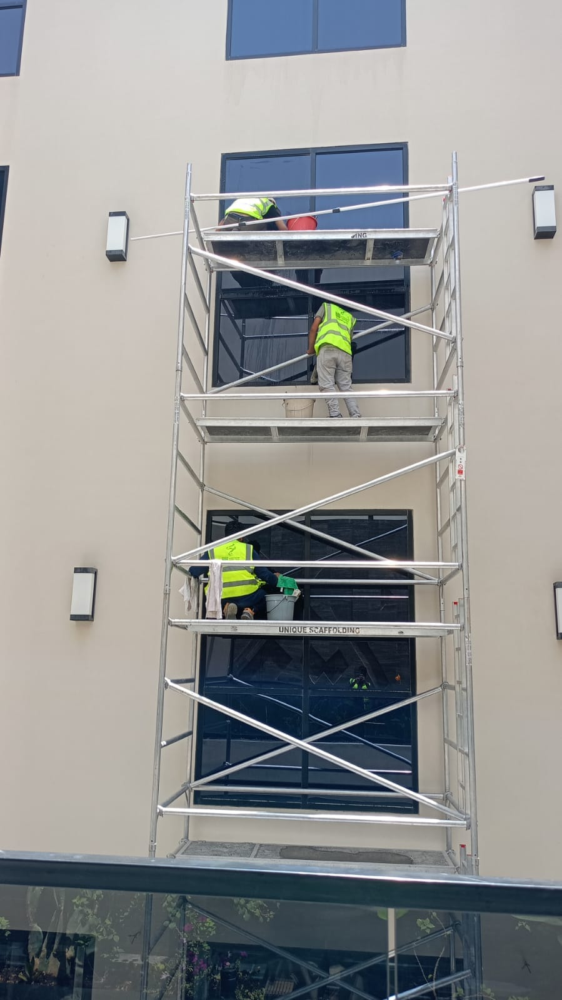
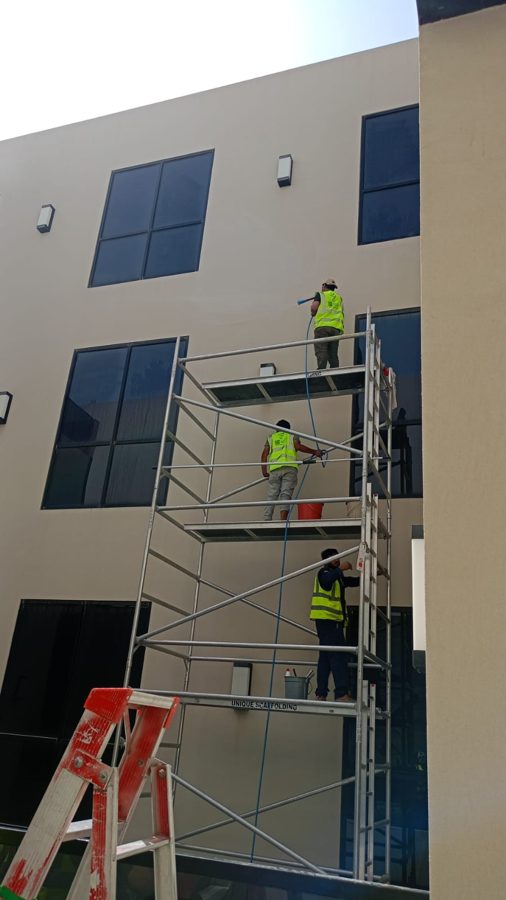
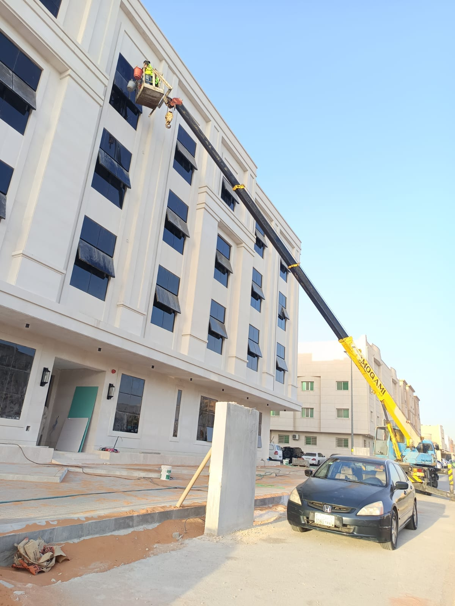

تعتبر الواجهات الحجرية من أكثر أنواع التشطيبات الخارجية انتشاراً بين الفلل الفاخرة في الرياض، لما تمنحه من مظهر فخم وأنيق يدوم لسنوات طويلة. إلا أن هذا النوع من الواجهات يتعرض بمرور الوقت لظاهرة التمليح، وهي بقع بيضاء تظهر على سطح الحجر نتيجة تبلور الأملاح الذائبة فيه، مما يستدعي التعامل مع شركة تنظيف واجهات حجرية متخصصة لإزالتها دون الإضرار بالحجر.
ومع انتشار الفلل ذات الواجهات الحجرية والرخامية في أحياء الرياض المختلفة، أصبحت الحاجة إلى شركة تنظيف بالرياض تمتلك خبرة دقيقة في التعامل مع أنواع الحجر المختلفة أمراً ضرورياً، خاصة أن أي خطأ في اختيار المواد أو الأدوات قد يتسبب في تلف دائم لسطح الواجهة.
ومن هذا المنطلق تقدم شركة حلول وتميز للتنظيف بالرياض خدمة متخصصة في تنظيف الواجهات الحجرية وإزالة التمليح والبقع، باستخدام محاليل معالجة متخصصة تحافظ على لون ومسامية الحجر الطبيعي دون أي أضرار جانبية.
وتُعد شركة حلول وتميز للتنظيف من الشركات القليلة في الرياض التي تجمع بين خبرة التعامل مع مختلف أنواع الأحجار الطبيعية والصناعية، وفهم دقيق لأسباب ظهور التمليح وطرق معالجته الصحيحة دون الإضرار بالمظهر النهائي للواجهة.
فريق حلول وتميز أثناء تنظيف واجهة فيلا حجرية بالرياض باستخدام سقالة متخصصة
ما هو التمليح ولماذا يظهر على واجهات الحجر؟
التمليح هو ظاهرة طبيعية تحدث عندما تتسرب الأملاح الذائبة الموجودة داخل الحجر أو الخرسانة إلى السطح الخارجي مع تبخر الماء، لتتبلور على شكل طبقة بيضاء أو رمادية تشوه المظهر العام للواجهة. وتزداد هذه الظاهرة وضوحاً في المناخات الحارة والجافة مثل مناخ الرياض.
وتحتاج معالجة التمليح إلى شركة تنظيف واجهات حجرية تفهم المصدر الحقيقي للمشكلة، لأن إزالة الأملاح من السطح فقط دون معالجة مصدر الرطوبة قد يؤدي إلى عودة الظاهرة مرة أخرى بعد فترة قصيرة.
وتشمل الأسباب الشائعة لظهور التمليح على واجهات الفلل الحجرية بالرياض:
- ارتفاع نسبة الأملاح في مواد البناء المستخدمة
- تسرب المياه من الأنابيب أو أنظمة الري القريبة من الواجهة
- سوء تصريف مياه الأمطار بعيداً عن أساسات المبنى
- استخدام مواد عزل غير مناسبة أثناء مرحلة البناء
- التقلبات الحرارية الكبيرة بين الليل والنهار
ولهذا تعتمد شركة تنظيف بالرياض ذات الخبرة على معاينة دقيقة لمصدر المشكلة قبل البدء في أي معالجة، لضمان نتيجة تدوم لأطول فترة ممكنة دون تكرار ظهور البقع.


خطوات إزالة التمليح والبقع عن الواجهات الحجرية
تعتمد شركة حلول وتميز للتنظيف على منهجية علمية ومدروسة عند تنفيذ أعمال إزالة التمليح، بحيث يتم ضمان أفضل نتيجة دون أي ضرر على الحجر. وتشمل خطوات شركة تنظيف واجهات حجرية ما يلي:
- معاينة نوع الحجر وتحديد مصدر الرطوبة المسبب للتمليح
- تنظيف السطح أولاً من الأتربة والأوساخ السطحية
- استخدام محلول معالجة متخصص لإذابة طبقة الأملاح المتبلورة
- فرك السطح بفرش ناعمة لا تخدش الحجر أثناء الإزالة
- شطف الواجهة جيداً بالماء لإزالة أي بقايا للمحلول
- تطبيق طبقة حماية عازلة تقلل من فرص عودة التمليح مستقبلاً
وبهذه الخطوات المدروسة تضمن شركة حلول وتميز للتنظيف تسليم واجهة نظيفة تماماً وخالية من بقع الأملاح، وهو ما يميزها كـ شركة تنظيف واجهات حجرية ذات سمعة موثوقة في سوق الرياض.
💡 ملاحظة مهمة: لا يُنصح باستخدام مواد حمضية قوية أو أدوات كاشطة خشنة لإزالة التمليح عن الحجر الطبيعي، لأن ذلك قد يغير لون الحجر أو يزيد من مساميته. ويفضل دائماً الاستعانة بـ شركة تنظيف واجهات حجرية متخصصة تستخدم محاليل معايرة بدقة لكل نوع حجر.
شركة تنظيف واجهات حجرية للفلل والقصور الفاخرة
تحتاج الفلل والقصور ذات الواجهات الحجرية الفاخرة إلى شركة تنظيف بالرياض تمتلك خبرة خاصة في التعامل مع أنواع الحجر المستوردة والمحلية المختلفة، مثل الحجر الهاشمي والترافرتين والجرانيت. وتشمل خدمات شركة تنظيف واجهات حجرية لهذا النوع من المباني:
- إزالة التمليح والبقع البيضاء عن واجهات الحجر الطبيعي
- تنظيف الأعمدة والزخارف الحجرية الدقيقة
- معالجة بقع الصدأ الناتجة عن قطع معدنية قريبة من الحجر
- تلميع الأسطح الحجرية الملساء دون التأثير على ملمسها الطبيعي

استخدام رافعة هيدروليكية لتنظيف واجهة مبنى حجري متعدد الطوابق بالرياض
وتستخدم شركة تنظيف واجهات حجرية معدات رفع متخصصة للوصول إلى الواجهات المرتفعة للفلل متعددة الطوابق، مع الالتزام الكامل بمعايير السلامة أثناء التنفيذ على الارتفاعات المختلفة.
كما تحرص شركة حلول وتميز للتنظيف على تنسيق مواعيد التنفيذ بما يتناسب مع طبيعة كل مشروع، لتقليل أي تأثير على سكان المنزل أو الحديقة المحيطة بالواجهة أثناء التنفيذ.
أدوات ومعدات شركة تنظيف واجهات حجرية المتخصصة
يعتمد نجاح عملية إزالة التمليح والبقع عن الحجر بشكل كبير على جودة المواد والمعدات المستخدمة. ولهذا تعتمد شركة حلول وتميز للتنظيف على مجموعة من الأدوات المتخصصة، تشمل:
محاليل معالجة التمليح
مواد مصممة خصيصاً لإذابة الأملاح المتبلورة دون التأثير على لون أو نسيج الحجر.
فرش وأدوات فرك ناعمة
مصممة للتعامل مع الأسطح الحجرية الحساسة دون ترك خدوش أو آثار.
أجهزة الغسيل بالضغط المتحكم
تسمح بشطف الواجهة بضغط مياه مناسب لا يضر بمسامية الحجر الطبيعي.
مواد العزل والحماية
طبقات حماية تُطبق بعد التنظيف لتقليل امتصاص الحجر للرطوبة مستقبلاً.
وبفضل هذه الأدوات المتخصصة، رسخت شركة حلول وتميز للتنظيف اسمها كإحدى أبرز خيارات شركة تنظيف واجهات حجرية التي يعتمد عليها أصحاب الفلل في الرياض لتنفيذ أعمال دقيقة وحساسة.
مقارنة بين المعالجة الاحترافية والطرق التقليدية
| المعيار | معالجة احترافية متخصصة | الطرق التقليدية |
|---|---|---|
| خطر تلف الحجر | منعدم تقريباً بفضل المحاليل المعايرة | مرتفع مع المواد الحمضية القوية |
| معالجة مصدر المشكلة | معاينة وعلاج جذر المشكلة | إزالة سطحية دون علاج السبب |
| احتمالية عودة التمليح | منخفضة بفضل طبقة الحماية | مرتفعة خلال فترة قصيرة |
| الحفاظ على لون الحجر الطبيعي | مضمون بالكامل | قد يتغير اللون مع الاستخدام الخاطئ |
ومن خلال هذه المقارنة يتضح الفرق الكبير بين الاعتماد على شركة حلول وتميز للتنظيف المتخصصة والاعتماد على وسائل تنظيف منزلية عشوائية قد تضر بالحجر بدلاً من تحسين مظهره.
عوامل تحديد تكلفة تنظيف الواجهات الحجرية
تختلف تكلفة خدمة شركة تنظيف واجهات حجرية من مشروع لآخر بناءً على عدة عوامل، ولهذا تحرص شركة حلول وتميز للتنظيف على معاينة الموقع قبل تحديد السعر النهائي بدقة.
- مساحة الواجهة الحجرية ونوع الحجر المستخدم فيها
- شدة التمليح ومدى تكرار ظهوره على السطح
- الحاجة إلى معالجة مصدر الرطوبة بالإضافة إلى التنظيف
- ارتفاع الواجهة وحاجتها لمعدات رفع خاصة
- الموقع الجغرافي داخل الرياض ومدى سهولة الوصول إليه
وتوفر شركة تنظيف بالرياض عروض أسعار واضحة بعد المعاينة المباشرة، مع الحرص التام على الشفافية مع العميل قبل بدء التنفيذ، دون أي رسوم إضافية غير متوقعة بعد الاتفاق المبدئي على السعر.
نصائح للحفاظ على واجهة الحجر بعد إزالة التمليح
بعد الانتهاء من عملية إزالة التمليح ومعالجة مصدر الرطوبة، هناك بعض النصائح البسيطة التي تساعد في تقليل فرص عودة الظاهرة لأطول فترة ممكنة:
- التأكد من انتظام صيانة أنظمة الري بعيداً عن الواجهة الحجرية
- فحص تصريف مياه الأمطار بشكل دوري خاصة قبل فصل الشتاء
- تجنب غسيل الواجهة بمياه شديدة الضغط دون إشراف متخصص
- الاستعانة بجدول صيانة سنوي للفحص المبكر لأي علامات تمليح جديدة
وتقدم شركة حلول وتميز للتنظيف أيضاً خدمات متابعة دورية للعملاء الذين يرغبون في الحفاظ على واجهاتهم الحجرية بأفضل حالة على مدار العام، بما يقلل من الحاجة لمعالجات مكلفة لاحقاً.
مناطق تغطية خدمة تنظيف الواجهات الحجرية بالرياض
تقدم شركة تنظيف بالرياض خدماتها في جميع أحياء ومناطق العاصمة، حيث يغطي فريق حلول وتميز مناطق واسعة تشمل:
ويتيح هذا الانتشار الواسع لـ شركة حلول وتميز للتنظيف الاستجابة السريعة لطلبات أصحاب الفلل في أي منطقة بالرياض، مع توفير فرق متخصصة قادرة على التعامل مع أنواع الحجر المختلفة بخبرة ودقة عالية.
معايير اختيار شركة تنظيف بالرياض للواجهات الحجرية
قبل التعاقد مع أي جهة لمعالجة التمليح وتنظيف الواجهة الحجرية، من المهم التأكد من عدة معايير أساسية تضمن جودة التنفيذ وسلامة الحجر. وتحرص شركة تنظيف بالرياض موثوقة مثل حلول وتميز على توضيح هذه المعايير لعملائها قبل بدء أي مشروع:
- خبرة موثقة في التعامل مع مختلف أنواع الأحجار الطبيعية والصناعية
- معرفة دقيقة بأسباب ظهور التمليح وطرق معالجته الجذرية
- محاليل معايرة بدقة حسب نوع كل حجر لتجنب أي تغيير في اللون
- سجل تجاري رسمي وشفافية كاملة في التعاقد والأسعار
- ضمان واضح على جودة التنفيذ وعدم عودة البقع بسرعة
ويساعد الاطلاع على هذه المعايير أصحاب الفلل في اختيار شركة تنظيف بالرياض مناسبة، بدلاً من الاعتماد فقط على السعر الأقل الذي قد يخفي وراءه نقصاً في الخبرة أو استخدام مواد غير مناسبة لنوع الحجر الموجود في الواجهة.
عقود الصيانة الدورية للواجهات الحجرية
بدلاً من انتظار تفاقم التمليح وانتشاره على مساحة أكبر من الواجهة، يفضل الكثير من أصحاب الفلل التعاقد بشكل دوري مع شركة تنظيف بالرياض بدلاً من الاكتفاء بمعالجة لمرة واحدة، وذلك لضمان اكتشاف أي علامات مبكرة للتمليح قبل أن تتفاقم المشكلة وتصبح أكثر صعوبة في المعالجة.
وتوفر شركة حلول وتميز للتنظيف عقود صيانة مرنة تُصمم بناءً على طبيعة كل فيلا ونوع الحجر المستخدم في واجهتها، مع إمكانية جدولة الزيارات بمعدل موسمي يتناسب مع تغير الأحوال الجوية على مدار العام. كما تشمل هذه العقود عادة فحصاً دورياً لأنظمة تصريف المياه والري القريبة من الواجهة، للتنبيه المبكر لأي مصدر رطوبة قد يتسبب في ظهور التمليح مجدداً قبل أن يترك أثراً واضحاً على سطح الحجر.
وتقدم شركة تنظيف بالرياض أيضاً خصومات خاصة لعملاء العقود الدورية مقارنة بالخدمة لمرة واحدة، وهو ما يجعل التعاقد طويل المدى خياراً اقتصادياً أكثر لأصحاب الفلل الحجرية التي تحتاج إلى متابعة منتظمة على مدار السنة للحفاظ على مظهرها الفاخر.
لماذا يثق أصحاب الفلل في فريق العمل؟
على مدار سنوات من العمل في مجال تنظيف ومعالجة الواجهات الحجرية، اكتسب فريق شركة حلول وتميز للتنظيف خبرة عملية واسعة في التعامل مع مختلف أنواع الحجر المستخدمة في الفلل والقصور بالرياض، بدءاً من الحجر الهاشمي وحتى الرخام والجرانيت المستورد.
ويحرص الفريق على معاينة كل واجهة بدقة قبل البدء في أي معالجة، لتحديد نوع الحجر ومصدر الرطوبة المحتمل بشكل صحيح، بدلاً من تطبيق نفس الحل على جميع الحالات دون مراعاة الفروق الدقيقة بين نوع وآخر من أنواع الحجر الطبيعي والصناعي المستخدم في تشطيب الواجهات.
كما توفر شركة تنظيف بالرياض تقارير دورية لأصحاب الفلل توضح حالة الواجهة وأي ملاحظات فنية قد تحتاج إلى متابعة، مثل تسرب بسيط في نظام الري أو ضعف في تصريف مياه الأمطار، بما يساعد صاحب المنزل على اتخاذ إجراءات وقائية مبكرة قبل تفاقم أي مشكلة تؤثر على مظهر الواجهة الفاخر.
معايير الجودة الداخلية لدى الفريق
تعتمد شركة حلول وتميز للتنظيف على نظام مراجعة داخلي لكل مشروع، حيث يقوم مشرف مختص بفحص الواجهة بعد الانتهاء من التنفيذ للتأكد من إزالة جميع آثار التمليح بشكل كامل قبل تسليم العمل للعميل. وتحرص شركة حلول وتميز للتنظيف على توثيق حالة الواجهة بالصور قبل وبعد التنفيذ، بما يتيح للعميل مقارنة واضحة للنتيجة النهائية ومتابعة أي تغيرات قد تظهر على الواجهة في الزيارات اللاحقة ضمن عقد الصيانة الدوري إن وجد.
الأسئلة الشائعة حول تنظيف الواجهات الحجرية
الخاتمة
إذا كنت تمتلك فيلا بواجهة حجرية في الرياض وتبحث عن أفضل شركة تنظيف واجهات حجرية تجمع بين الخبرة والدقة والمحاليل المتخصصة، فإن شركة حلول وتميز للتنظيف توفر لك جميع الحلول اللازمة لإزالة التمليح والبقع دون تلف أو تغيير في لون الحجر.
وسواء كنت تحتاج إلى شركة تنظيف بالرياض لمعالجة تمليح ظاهر على واجهة منزلك، أو تبحث عن جدول صيانة دوري يحافظ على مظهر الواجهة الحجرية على مدار العام، فإن فريق العمل يمتلك الخبرة والمعدات المناسبة لتحقيق أفضل النتائج.
وتواصل شركة حلول وتميز للتنظيف تقديم خدماتها في جميع أحياء الرياض مع الاعتماد على أحدث المحاليل وأساليب العمل الحديثة، بينما يواصل فريق شركة تنظيف واجهات حجرية تنفيذ مشاريع الفلل والقصور باحترافية عالية ونتائج تمنح الواجهات الحجرية مظهراً نظيفاً وفخماً يعكس جودة التشطيب الأصلي للمبنى.
وفي النهاية، تبقى معالجة التمليح خطوة استباقية تحافظ على قيمة العقار وتمنع تفاقم المشكلة لتصبح أكثر صعوبة وتكلفة في المعالجة لاحقاً. لمزيد من الاستفسارات أو لحجز موعد المعاينة، يمكن التواصل مباشرة عبر الاتصال أو الواتساب في أي وقت.
ويظل اختيار شركة تنظيف بالرياض ذات خبرة موثقة في التعامل مع الحجر الطبيعي هو الفيصل الحقيقي في نجاح أي مشروع معالجة تمليح، بغض النظر عن حجم الفيلا أو نوع الحجر المستخدم في واجهتها. وتحرص شركة حلول وتميز للتنظيف على تطوير أساليب عملها باستمرار بما يتناسب مع أحدث المعايير العالمية في مجال صيانة الأحجار الطبيعية، لضمان تقديم تجربة متكاملة تجمع بين الجودة والاحترافية والالتزام الكامل بالمواعيد المتفق عليها مع كل عميل.
وتبقى العلاقة طويلة المدى بين شركة تنظيف بالرياض وصاحب الفيلا أحد أهم عوامل النجاح في هذا النوع من الخدمات، حيث يساعد التعامل المستمر مع شركة تنظيف بالرياض واحدة على فهم أدق لتفاصيل نوع الحجر وتاريخ الواجهة، مما يقلل من وقت المعاينة في كل زيارة ويسرّع من وتيرة التنفيذ مقارنة بالتعامل مع جهة جديدة في كل مرة. وتساهم شركة تنظيف بالرياض ذات الخبرة المتراكمة في التنبؤ المسبق بأي مشكلات متوقعة بناءً على الزيارات السابقة لنفس الموقع، بما يوفر الوقت والجهد على صاحب المنزل في كل مرة يحتاج فيها لخدمة شركة تنظيف واجهات حجرية موثوقة.
ومهما كانت طبيعة الحجر المستخدم في واجهة الفيلا، سواء كان طبيعياً أو صناعياً، يبقى العامل الأهم هو التعامل مع شركة تنظيف واجهات حجرية تفهم خصائص كل نوع وتتعامل معه بما يناسبه من محاليل وأدوات، بدلاً من تطبيق نفس الأسلوب على جميع الحالات. وتحرص شركة تنظيف بالرياض المتخصصة على تدريب فريقها باستمرار على أحدث الأساليب في هذا المجال، بينما تواصل شركة تنظيف بالرياض تقديم خدماتها بجودة ثابتة لكل عميل جديد في مختلف أحياء العاصمة.